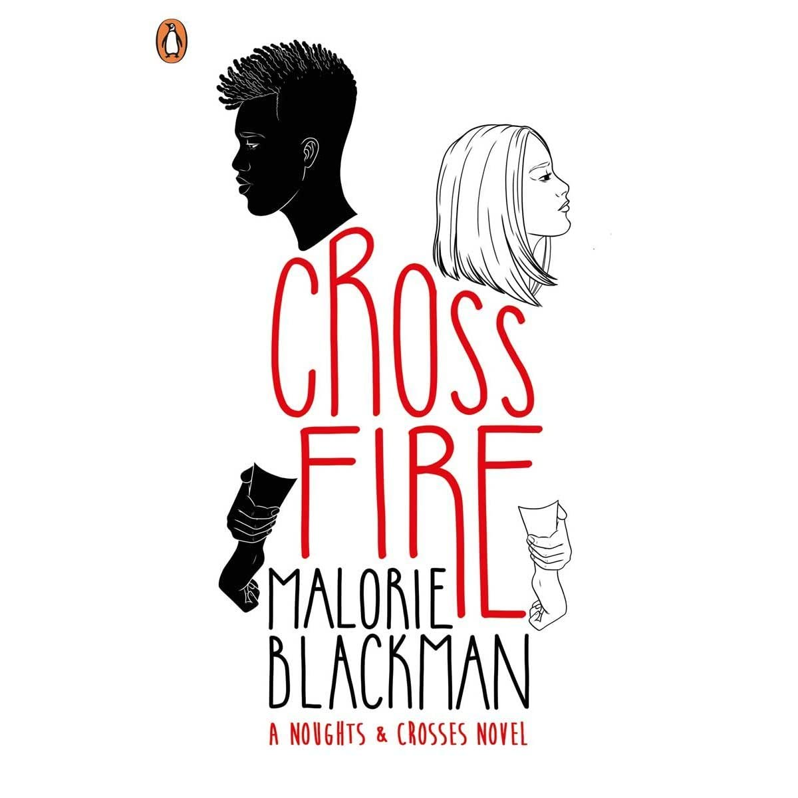
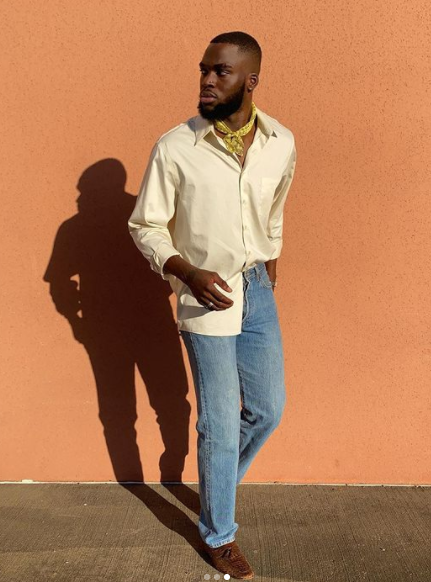

Books! I love a good novel or comic book, and in case any of you do too, I've included 3 of my favourite reads from the past couple of years.

Some of my favourite tunes. I've got a pretty diverse music taste, so you might find yourself a new track to add to your playlist.

A little bit of swagger. I've included a few small influencers whose styles I think are worth checking out.
My screen time - I enjoy movies and tv shows during my downtime. Maybe you'll find some movie and show picks to add to your queue.